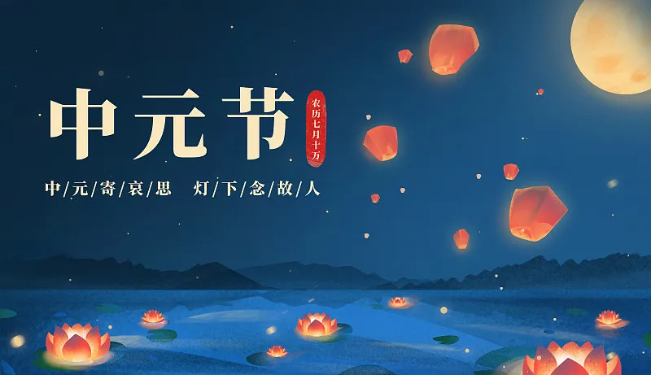

中元节
———幽冥灯火照归途
源起演变
中元节肇始于东汉道教“三元说”，《道藏》载“七月十五地官赦罪，道观作斋醮”。北魏时与佛教盂兰盆节融合，《佛说盂兰盆经》目连救母故事赋予其孝道内涵。唐代形成全民祭祖传统，敦煌文书S.2832号记载“中元设会，酒脯祭先”。明清时期南方发展出“水陆道场”“放河灯”等习俗，2010年香港潮籍社团恢复“盂兰胜会”巡游，入选国家级非遗。
核心习俗：
河灯引渡：
桂林两江四湖放荷花灯，灯壁需手写《地藏经》摘句；
街坊施孤：
潮汕“施孤”活动搭设五米高孤棚，撒发印有“往生咒”的米糕；
焚寄冥器：
山西晋中糊制纸扎别墅需配微型家电，仿明式家具榫卯结构；
目连戏演：
安徽祁门保留元代《目连救母》傩戏，唱腔含佛教梵呗元素。
文化意义
节日构建生死对话的伦理空间，台南盐水蜂炮以万枚冲天炮驱晦，暗合《周易》“震卦”破旧立新之理。新加坡韭菜芭城隍庙中元祭典保留闽南“竖灯篙”仪式，21米竹竿挂灯笼指引孤魂，展现华人“慎终追远，民德归厚”的普世价值。
现代新生
环保部门推广“电子河灯”，LED灯投影二维码可显示悼文；深圳殡仪馆推出“全息影像祭台”，AI复原逝者音容对话。2023年台北故宫举办“幽冥美学展”，3D打印复刻唐代绢衣纸俑，让传统冥器升华为装置艺术。
